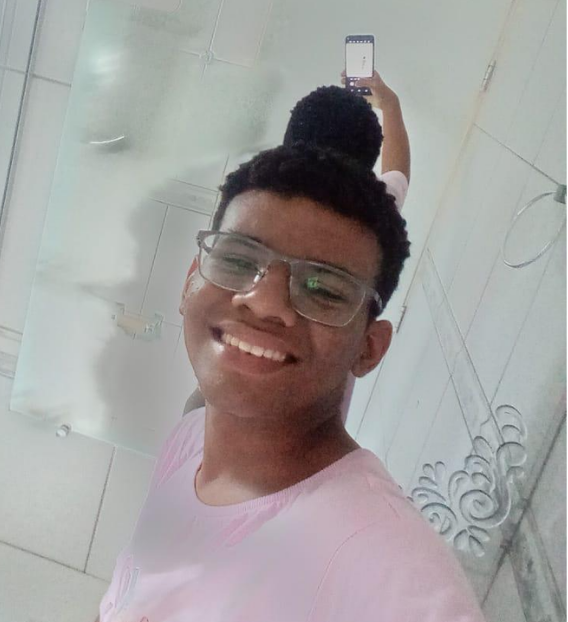
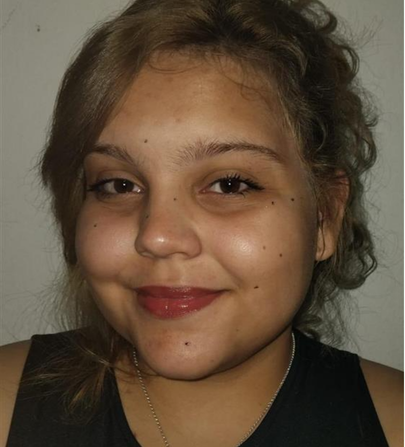
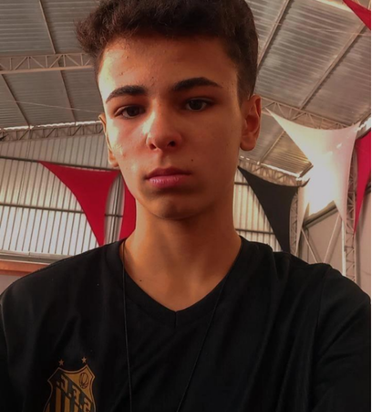

Atraves de Paginas atravessamos mundos
É apartir do conhecimento,
Que se pode virar sua proxima pagina.
Um trabalho que surgiu da paixao pela literatura e da nescessidade de falar sobre ela.
Edição
08.24
08.24
PULSO
Novas formas
de estar junto
de estar junto
UM PROJETO SENAC SJC✳EDUCAÇAO DE QUALIDADE✳FUTURO✳LITERATURA✳INFORMAÇAO
Diretamento do ENSINO MÉDIO
Venha conhecer
a nossa equipe.


